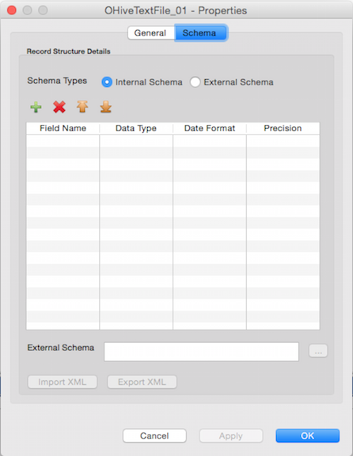

Accelero Help
Accelero Help
Output Hive TextFile Properties
Accelero Release Version 1.0
Properties for the Output Hive TextFile component can be viewed by Double click->component on canvas. The properties contain a 'General' tab and a 'Schema' tab. Common and mandatory properties are present in the General tab. Schema displays option to accept the field schema i.e. field name, Data type, scale etc.
General Properties:

Display
- Name - The Name field will specify the name of the component as desired by the user
- Base Type - Base Type signifies the basic operation area of the component. In this case it is of Base Type Output.
- Type - Type further categorizes the component to detailed operation that it intends to perform. Here it is of type Output Hive TextFile.
Configuration
- Database Name - Database Name is used to specify the Hive Database Name. User has to manually type the database name in the text box provided.
- Table Name - Table Name is used to specify the Hive Database Name. User has to manually type the table name in the text box provided.
- External Table Path - External Table Path is used to specify Hive Database/Table location. User has to manually type the path in the text box provided.
- Partiton Keys - Partition Keys enables the user to enter user-specific partitions based on schema. Each Table can have one or more partition Keys which determines how the data is stored. Partitions - apart from being storage units - also allow the user to efficiently identify the rows that satisfy a certain criteria.User has can drag and drop the fields required.
- Delimiter - The Delimiter field accepts the delimiter that is present in the input file selected. By default the delimiter passed to this component is '|'
- Safe Property - This property accepts Boolean values True and False. It can also be parameterized and later on resolved during run-time. The Safe property when True, allows the input fields to pass evaluation despite of Data type mismatch. When False, fields with Data type mismatch will be rejected and the component will abort processing returning an error.
- Strict - Strict accepts Boolean values True and False. It can also be parameterized and later on resolved during run-time. Strict property is used to check if the record structure i.e. number of fields, length of records, scale etc are exactly listed by the user as in the input file. When set to True, the component fails if the record structure doesn't match with the one specified by the user. Reverse in case of False.
- Quote - Quote field accepts the masked character used to mask the delimiter in the input file. When the quote is given, all the delimiters which are followed by this quote, will not be considered as delimiters rather considered as text.
- Runtime Properties - Runtime properties are used to override the Hadoop configurations specific to Output Hive TextFile component at run time. User is required to enter the Property Name and Value in the runtime properties grid.

- Phase - Phase simply accepts a numeric number starting from 0 and signifies the phase this component will execute in. By default this is 0.
Schema tab:

Schema Types
- Internal - User is provided a Grid to enter the internal schema of the Input Text file.
- Field Name - User needs to enter all the Field names in this column
- Data type - By default "string" Data type has been selected for any field added to the Grid. User can select from different Data type values like "integer", "double", "float" etc.
- Date Format - User can specify desired date format like "YY-DD-MM", "YYYYMMDD" etc for a date field in this column.
- Scale - Scale for a double, float or bigdecimal field can be specified here.
- External - User can provide an external Accelero Schema file of XML format. A text box is provided to either manually type or use the Browse button to select the schema file from File system. The External schema file path is resolved during run time and replaced with the contents of the file in the Job XML.